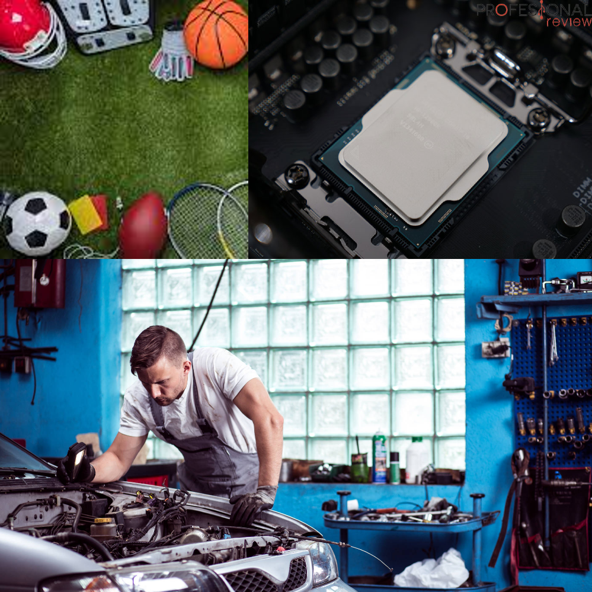

QUIEN SOY
Hola, soy Félix Rodríguez Garcia, de 2ºBach A, esta es mi página web.
AFICIONES Y GUSTOS
- Practicar deportes (Baloncesto, tenis, ciclismo,...)
- Me gusta la utomoción y la mecánica
- La informatica me parece mundo interesante.

Hola, soy Félix Rodríguez Garcia, de 2ºBach A, esta es mi página web.